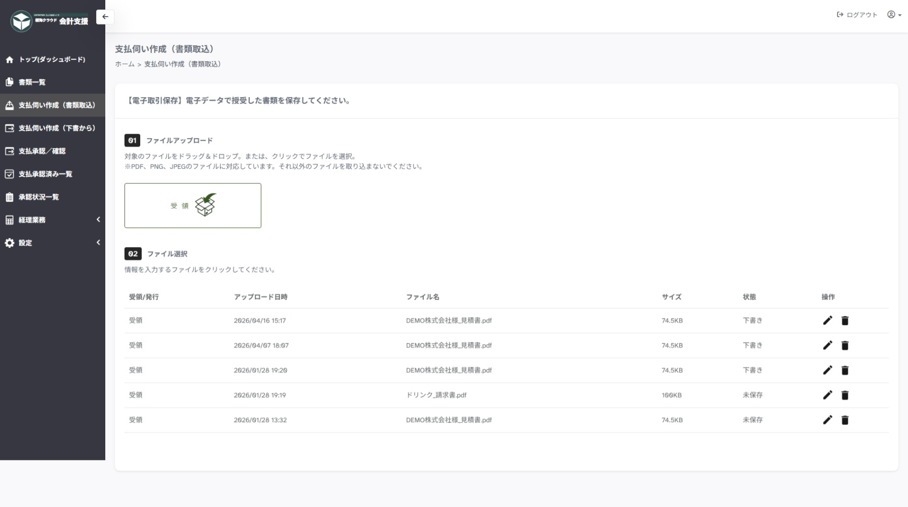
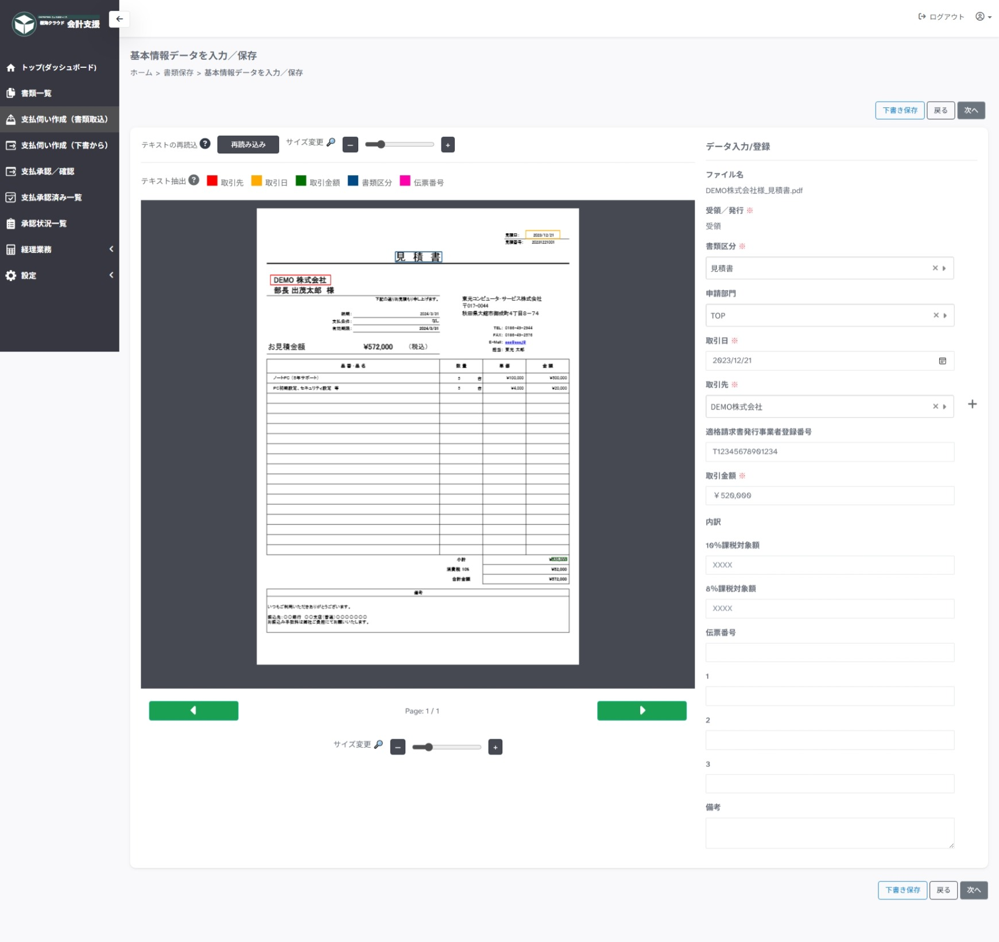
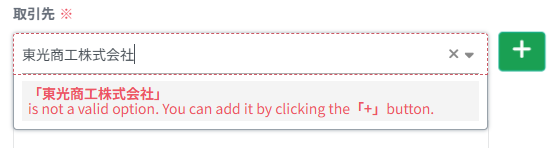
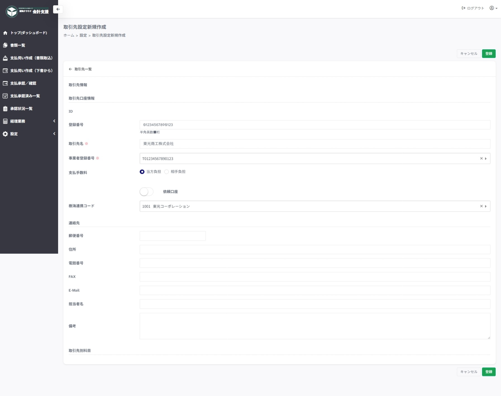
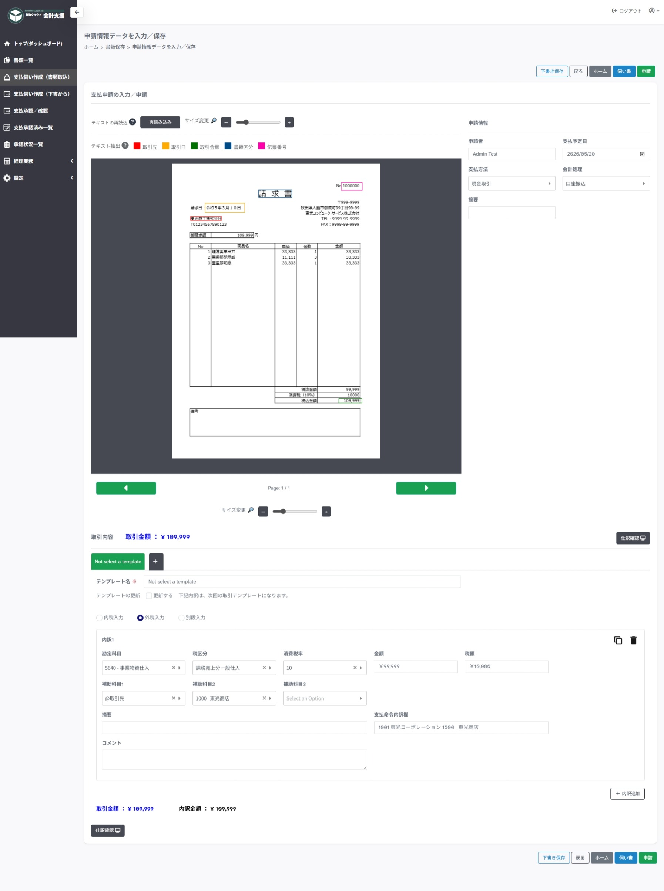
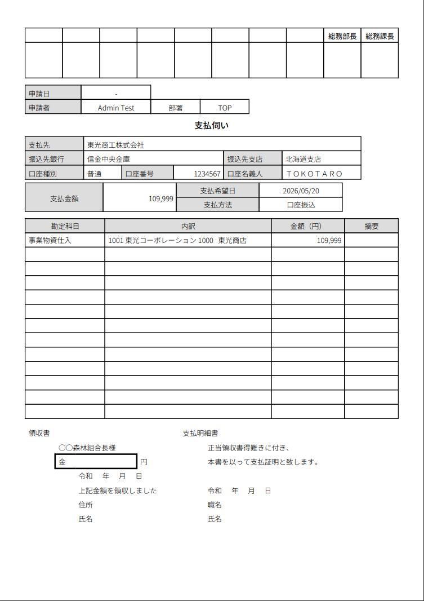
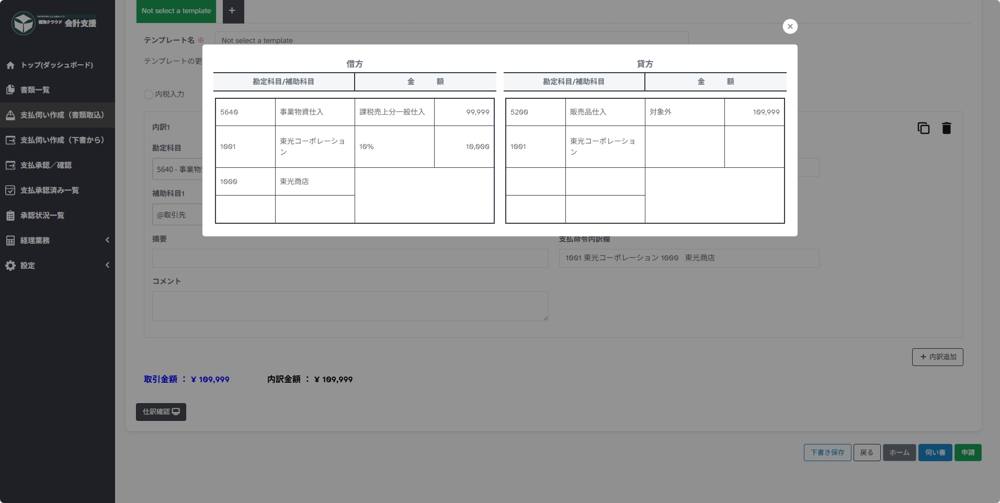
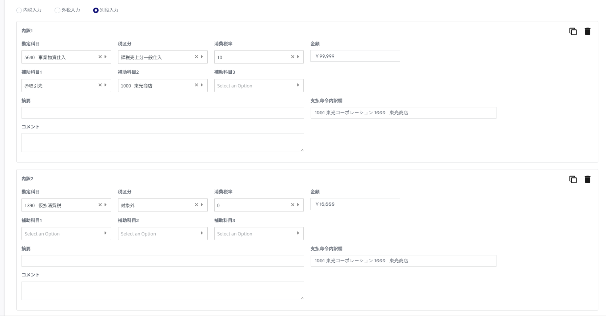

支払伺い作成と申請
サイドメニューの支払伺い作成（書類取込）から申請します。
1. 書類取込
書類取込では、画像ファイル（PDF、PNG、JPEG）をサービスへ取り込みます。

1 ファイルアップロード -> クリックでファイルを選択、または、ドラッグ＆ドロップでファイルを取り込めます。
2 ファイル選択 -> 取り込んだファイルの一覧が表示されます。
- 操作の「鉛筆マーク」で `2. 基本情報入力` を開始します。
- 操作の「ごみ箱マーク」で削除します。
2. 基本情報入力
基本情報入力では、書類ファイルから読み取った内容を伝票として整理します。

主な入力項目:
- 書類区分
- 申請部門
- 取引日
- 取引先
- 適格請求書発行事業者登録番号
- 取引金額
- 内訳金額
- 10%課税対象額
- 8%課税対象額
- 伝票番号
- 備考
次へボタン:
次へボタンで申請情報入力にページを移動します。
下書き保存ボタン:
現在の状態で保存して入力を終了します。 状態が「下書き」になります。
文字認識（ OCR ）について <クリックで開く>
以下の項目を認識対象として読み込みます。
- 書類区分
- 取引日
- 取引先
- 取引金額
- 伝票番号
テキストの読み込みに成功した場合、プレビュ－のその箇所が枠線によって囲われます。 うまく読み込めていない場合、対象の入力項目にカーソルを置いてプレビューをドラッグしてテキストを選択できます。
取引先の追加について <クリックで開く>
取引先設定 に登録されていない取引先の場合、"＋"ボタンより取引先設定を別タブで開いて登録します。


3. 申請情報入力
申請情報入力では、支払と会計に必要な情報を登録します。

主な入力項目:
- 申請者
- 支払予定日
- 支払方法
- 金融機関情報 ※口座振替の場合のみ
- 会計処理
- 税計算方法
- 会計内訳
- 勘定科目
- 税区分
- 消費税率
- 金額
- 税額
- 補助科目
- 支払命令内訳欄
- コメント
伺い書ボタン:
伺い書ＰＤＦをプレビューします。
伺い書イメージ <クリックで開く>

戻るボタン:
基本情報入力にページを移動します。
下書き保存ボタン:
現在の状態で保存して入力を終了します。 状態が「下書き」になります。
ホームボタン:
書類取込にページを移動します。
申請ボタン:
申請を行います。 状態が「申請中」になります。
仕訳確認ボタン:
実際の仕訳プレビューを表示します。
仕訳確認イメージ <クリックで開く>

内訳追加ボタン:
仕訳の内訳が複数行ある場合に、仕訳行を追加できます。 主に消費税を別段で起こす、複数の税率がある場合などに利用します。
仕訳入力の考え方
仕訳入力
仕訳の入力については、経理の業務となります。
申請者は、コメント欄にて、どのような支払かを記載して申請します。
その後、経理担当が内容を確認して編集、保存を行います。
税計算方法別の入力例
- 内税入力 …
金額欄を税込で入力します。 - 外税入力 …
金額欄を税抜で入力します。 - 別段入力 …
金額欄を税抜、税額を0円で入力し、内訳追加から消費税用の明細を作成します。
別段入力イメージ <クリックで開く>

テンプレートについて
テンプレートの追加：
会計処理で設定した仕訳とは別に、特定の取引先の場合に仕訳の入力の仕方を変更するなど、利用頻度は少ないが仕訳のパターンを変更したい場合に利用します。
頻度が多く、勘定科目や補助科目を変更する場合は、会計処理を設定から追加することをお勧めします。
外税入力（税抜別段）の場合：
別段で消費税を追加する場合、毎回入力が必要になってしまうため、初回はテンプレートの更新に☑チェックを入れて申請することをお勧めします。